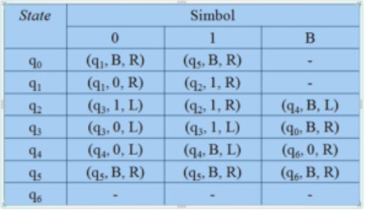
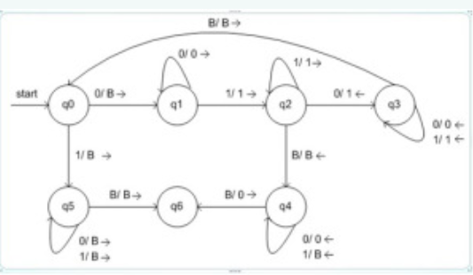

Apa itu Mesin Turing ?
Mesin turing adalah suatu model yang sangat sederhana dari komputer. Konsep mesin
turing pertama kali di kenalkan oleh Alan Turing pada tahun 1936 dalam papernya yang
berjudul “On Computable Numbers, with an Application to the Entscheidungsproblem”
.Konsep mesin turing inilah yang menjadi dasar dari teori komputabilitas.Mesin modern
dapat digunakan untuk berbagai permasalahan matematis yang sederhana. Contoh perhitungan
pada bilangan bulat, mengoreksi simbol, menghitung suatu fungsi bilangan bulat dan
lain-lain. Makalah ini akan didesign suatu mesinturing yang akan menerima bahasa
palindrome. Palindromeadalah suatu kata, kalimat yang jika dibaca dari depan ke belakang
atau sebaliknya akan sama hasilnya. Akan dibuktikan juga bahwa jika suatu masalah dapat
didukung oleh mesin turing satu pita maka dapat pula menerapkannya dengan mesin turing
banyak pita
Cara Kerja Mesin Turing
Mesin Turing
Pada PDA (Push Down Otomata) digunakan stack untuk menyimpan dan mengakses data inputan.
Tetapi hal ini menyebabkan kemampuan kerja PDA yang terbatas karena pada prinsip
stack,hanya data teratas yang bisa diakses. Ini menyebabkan keterbatasan PDA.
Mesin turing menggunakan pita (tape) sebagai memori yang berbentuk array . Hal ini
menyebabkan data pada pita dapat diakses dari mana saja.
Spesifikasi Mesin Turing
1. Mesin turing memiliki pita berupa array sebagai memori yang dapat menyimpan sebuah
simbol tunggal
2. Mesin turing memiliki head sebagai penunjuk posisi yang sedang diakses pada pita
3. Head dapat bergerak kekanan/kekiri pada pita sesuai fungsi transisi yang ditetapkan
untuk membaca inputan
4. Head juga dapat melakukan penulisan/ mengubah isi pita
Prinsip Kerja mesin Turing
1. Lihat state semula dan simbol yang ditunjuk head
2. Berdasarkan fungsi transisinya,tentukan:
- State berikutnya
- Lakukan penulisan ke pita
- Gerakkan head ke kanan dan ke kiri
3. Bila dari pasangan state dan simbol yang ditunjuk head tidak ada lagi fungsi
transisinya,berarti mesin turing berhenti
4. Bila mesin turing berhenti di dalam state final (F) , berarti input diterima.
Sebaliknya
jika mesin berhenti tidak pada state akhir,maka berarti inputan tersebut ditolak.
Definisi Mesin Turing
Mesin turing didefinisikan sebagai 7 tuple M={ Q, S, G, S, F, Ь, ∆}
Q: himpunan hingga state,
S: alfabet input,
G: simbol pada pita (meliputi pula blank)
S: state awal, S Î Q
Ь: simbol kosong (blank) (bukan bagian dari S )
∆: fungsi transisi
F: state akhir, F Î Q
Contoh 1
Sebuah contoh mesin Turing dapat dibangun untuk melakukan komputasi sederhana yang
didefinsikan seperti ini:
Tentukan ada berapa angka 1 dalam sebuah string berbentuk 0111...110 (rangkaian angka 1
yang didahului dengan 0 dan diakhiri juga dengan 0), apakah berjumlah genap atau
berjumlah ganjil.
Jika angka 1 di antara dua angka 0 berjumlah genap, tulis sebuah angka 0 pada salah satu
sel dari tape mesin Turing.
Jika angka 1 di antara dua angka 0 berjumlah ganjil, tulis sebuah angka 1 pada salah
satu sel dari tape mesin Turing.
Untuk menyelesaikan masalah komputasi ini, kita buat tiga buah State bagi mesin Turing
ini, yaitu Start, Even, dan Odd. Di samping itu kita buat sekumpulan aturan Transisi
yang digunakan oleh mesin Turing ini untuk melakukan proses komputasinya. Aturan-aturan
Transisi tersebut dapat dituliskan demikian:
1. Jika mesin Turing berada pada status Start, dan membaca simbol 0 pada Tape, lakukan
hal
berikut: Pindah status menjadi status Even, Ganti simbol 0 pada Tape dengan Blank (atau
Hapus simbol 0 pada Tape), dan Bergerak ke kanan satu sel.
2. Jika mesin Turing berada pada status Even, dan membaca simbol 1 pada Tape, lakukan
hal
berikut: Pindah status menjadi status Odd, Ganti simbol 1 pada Tape dengan Blank, dan
Bergerak ke kanan satu sel.
3. Jika mesin Turing berada pada status Odd, dan membaca simbol 1 pada Tape, lakukan hal
berikut: Pindah status menjadi Even, Ganti simbol 1 pada Tape dengan Blank, dan Bergerak
ke kanan satu sel.
4. Jika mesin Turing berada pada status Even, dan membaca simbol 0 pada Tape, lakukan
hal
berikut: Pindah status menjadi Halt, Ganti simbol 0 pada Tape dengan 0, dan tetap pada
sel tersebut (tidak perlu berpindah ke kiri maupun ke kanan).
5. Jika mesin Turing berada pada status Odd, dan membaca simbol 0 pada Tape, lakukan hal
berikut: Pindah status menjadi Halt, Ganti simbol 0 pada Tape dengan 1, dan tetap pada
sel tersebut.
Contoh 2
Mesin Turing berikut menghitungan fungsi , yang dinamakan monus atau proper
substraction.
Fungsi ini didefinisikan oleh m n = max(m – n, 0).
Bahwa, m n = m – n jika m ³ n dan 0
jika m < n.
Mesin Turing yang melakukan operasi ini adalah :
M=({q0, q1, … , q6}, {0, 1},
{0, 1, B}, d, q0, B)
Aturan untuk fungsi transisi d:

Diagram transisi dari mesin Turing M :
